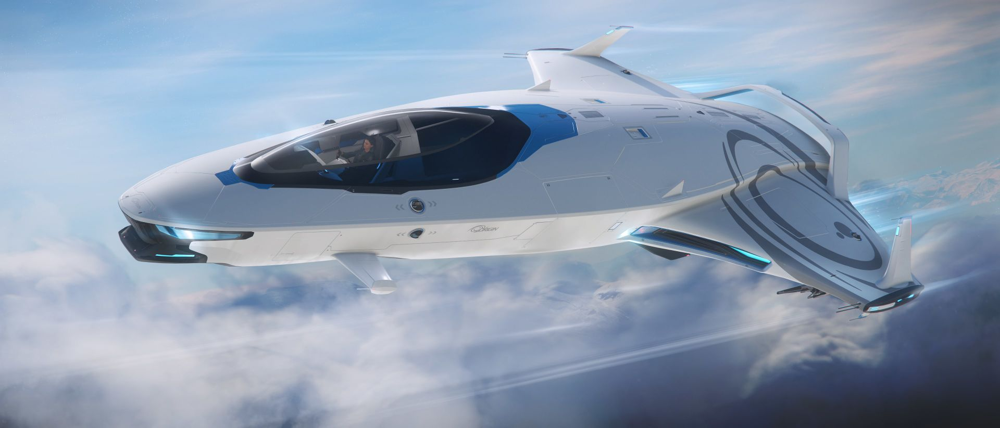

100 Series
Models
100i
The Origin 100i is a luxury starter ship that is the base variant of the 100 series. It features Origin Jumpworks' patented AIR Fuel System, making it the most efficient and eco-friendly ship on the market. It is capable of long-distance flights compared to most ships of its size.

Features
- AIR fuel system: The (Adaptive Intake Refinery) fuel system is a refinery system that refines gasses to usable plasma more efficiently compared to larger ships. It allows the ship to operate long-distance flights without the need of constant refueling. It is also environmentally friendly as it reduces thruster emissions significantly.
125a
The Origin 125a is a light fighter and starter ship that is the combat variant of the 100 series. With the AIR Fuel System, a souped-up weapons package, and all the luxury and refinement you've come to expect from Origin Jumpworks, the 125a has been designed for the discerning maverick.
- AIR fuel system: The (Adaptive Intake Refinery) fuel system is a refinery system that refines gasses to usable plasma more efficiently compared to larger ships. It allows the ship to operate long-distance flights without the need of constant refueling. It is also environmentally friendly as it reduces thruster emissions significantly.
135c
The Origin 135c is a light freight and starter ship that is the cargo variant of the 100 series. The ship has a specific cargo module integrated in the underside rear of the ship to accommodate the additional capacity.
- AIR fuel system: The (Adaptive Intake Refinery) fuel system is a refinery system that refines gasses to usable plasma more efficiently compared to larger ships. It allows the ship to operate long-distance flights without the need of constant refueling. It is also environmentally friendly as it reduces thruster emissions significantly.